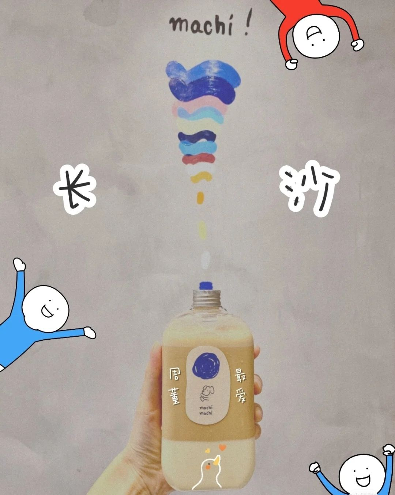

先说结论:因为长期以来，中国社会缺乏迎合年轻人口味的饮料。“为什么当代年轻人这么喜欢喝奶茶？”
先看看“非年轻人”、“成熟人”传统上都喝啥饮料：茶：白开水加茶叶一泡了事，苦的；啤酒：苦的；白酒：辣的；——没了。
你可能会说还有黄酒这种传统带甜味的酒，可现在街上有多少人喝这玩意？中国人对酒精的耐受力并不高，然而却不得不喝酒，
因为酒是一种社交工具，可以说中国的酒文化就是一种“自虐文化”。许多人说喝江小白的年轻人都不懂酒——可是“传统酒商懂年轻人吗？”
江小白不是什么好酒，但商店超市里常卖的啤酒、白酒都是啥破玩意？与经常推出新口味的碳酸、果汁类饮料相比，那些口味几十年不变的廉价工业啤酒、白酒真是一点诚意都没有。
话题回到奶茶。奶茶本身就是一个迎合年轻人需求的商品：首先它满足了消费者对日常甜味饮料的需求，而且口味丰富，卖相也好，冬天能当热饮。
即便市场上没有奶茶，也会出现其它满足这几个特点的流行饮料。其次，最初的中国茶饮和奶茶一样是在茶叶基础上加各种佐料的，但大约从宋朝起，受当时文人风气影响，
中国茶饮逐渐变成了白水+茶叶的单调模式。奶茶的兴起，莫种程度上算是传统的回归。你酒可以称之为“文化”，我奶茶当然也可以。而且奶茶比酒精更健康。